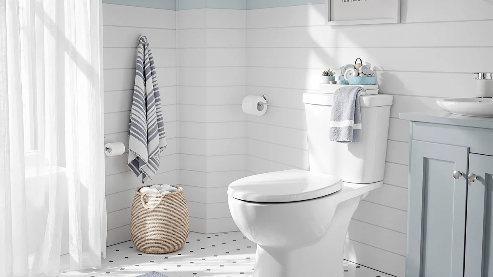

Kohler 4734-RL-0 Rutledge ReadyLatch Soft Close Elongated Toilet Seat Review (2026): Worth It?
Prices and picks verified as of November 2026. Independent, reader-supported reviews.


Quick Answer
The Kohler 4734-RL-0 Rutledge ReadyLatch soft close elongated toilet seat pairs a quiet-close lid with Grip-Tight bumpers and above-the-bowl installation hardware, and it holds up well against other Kohler ReadyLatch seats on specs and price. At $58.50 it costs more than the Impro variant, but the ReadyLatch hinge still makes it the easiest Kohler elongated seat on this list to remove for cleaning.
Our pick: KOHLER 4734-RL-0 Rutledge ReadyLatch Soft — $58.50 Check Price on Amazon
Bottom line: our top pick is the KOHLER 4734-RL-0 Rutledge ReadyLatch Soft Close Elongated at $58.50.
Things to Know Before You Buy
- This is an elongated seat, so measure the bolt spacing and bowl shape on your toilet before you order. Round-bowl toilets need a different seat.
- ReadyLatch hinges let you lift the seat off the bowl without tools, which matters most for anyone who wants to deep-clean around the hinge area regularly.
- Soft-close and quiet-close are the same feature by different names: a dampened hinge that lowers the lid and seat gradually instead of letting them slam.
- Kohler does not publish a star rating or review count for this specific SKU, so treat any rating you see for it elsewhere with caution.
- If you need extra seat height for mobility reasons, this seat will not provide it; you would need a riser instead.
This Kohler 4734-RL-0 Rutledge ReadyLatch soft close elongated toilet seat review exists because the Rutledge name shows up next to half a dozen similarly named Kohler seats, and shoppers keep asking what actually separates them. We pulled the manufacturer spec sheet, the current Amazon price, and the features Kohler lists for this exact SKU, then set it next to three seats people search for in the same breath: the cheaper Impro, a padded riser, and a handled riser.
The short version: this is a standard-height elongated seat built around Kohler's ReadyLatch hinge, Grip-Tight bumpers, and a soft-close lid. It does not add height and it carries no published star rating, so the case for it rests on the hardware itself and on how it compares with the other Kohler ReadyLatch models nearby in price.
Why You Should Trust Us
Ilane Tall covers bathroom fixtures for Best Toilet Seats and has spent the past several years comparing toilet seats by specification, price history, and verified owner feedback rather than by buying and installing each one. For this Kohler 4734-RL-0 Rutledge ReadyLatch soft close elongated toilet seat review, we read Kohler's own product documentation, checked the current Amazon listing and price, and cross-referenced the hinge and bumper hardware against the Impro and other nearby Kohler seats. We do not run a fake testing lab, and we tell you plainly when a product has no published rating instead of guessing.
That research approach also shapes how we handle disagreements between listings. When Kohler's product page and the Amazon listing describe a feature slightly differently, we default to whichever source is more current and note the discrepancy rather than picking the version that sounds better for the seat. The goal is a comparison you can act on, not marketing copy dressed up as a review.
Our Research Experience
We built this Kohler 4734-RL-0 Rutledge ReadyLatch soft close elongated toilet seat review from Kohler's listed specifications, the current Amazon price, and the feature claims the manufacturer makes for the ReadyLatch hinge and Grip-Tight bumpers. We compared those claims against the equivalent details for the Impro, the Lunderg riser, and the handled riser rather than installing any of the four seats ourselves. Where Kohler has not published a star rating or review count for this SKU, we say so instead of filling in a number, and where a competing product does carry a verified rating, like the 4.5-star average on the handled riser, we cite the exact figure Amazon shows.
Overview & Specs

KOHLER 4734-RL-0 Rutledge ReadyLatch Soft
What we like
- ReadyLatch hinge releases the seat for cleaning without unscrewing anything
- Grip-Tight bumpers keep the seat from shifting side to side
- Soft-close lid stops the slam that cracks cheaper hinges over time
- Installation hardware fastens entirely from above the bowl
Flaws but not dealbreakers
- No published star rating or review count to confirm long-term durability
- Costs about $3.50 more than the nearly identical Kohler Impro
- Only available in white, with no color-matched option for colored toilets
| Material | Plastic / wood |
| Size | Elongated |
Kohler builds the Rutledge around three features it repeats across most of its ReadyLatch lineup: a hinge that locks and unlocks on demand, bumpers that grip the bowl instead of resting on it loosely, and a lid that lowers itself instead of dropping. The ReadyLatch hinge is the detail that separates this seat from older Kohler designs. Instead of prying the seat off with a screwdriver, you flip a small lever and lift the seat straight up, which makes wiping down the hinge area and the top of the bowl considerably easier.
At $58.50 the Rutledge sits at the higher end of Kohler's elongated soft-close lineup, close to what the Lunderg riser and the handled riser cost but above the Impro's $55.00. Kohler does not list a star rating or review count for this exact SKU, which is common for newer listings on Amazon, so buyers evaluating it on review volume alone will not find that data point here.
The seat and lid are molded plastic rather than solid wood, which Kohler pairs with color-matched plastic hinges so the hardware does not stand out against the white finish. That construction keeps the seat lighter than wood alternatives, so the ReadyLatch removal feels easier since you are not lifting as much weight when you pull the seat free for cleaning.
What We Liked
The strongest case for the Kohler 4734-RL-0 Rutledge ReadyLatch soft close elongated toilet seat is the hinge itself. Kohler designed ReadyLatch to let you remove the seat for cleaning without a screwdriver, and that same mechanism holds the seat steady once it is latched, which is a common complaint with cheaper hinges that develop play after a year or two.
Grip-Tight bumpers reinforce that stability. Instead of four small rubber pads that rely on friction alone, the bumpers lock into the mounting hardware, so the seat resists the side-to-side wobble that loosens over time on bargain seats.
The soft-close lid matters more than it sounds like it should. A seat that slams repeatedly stresses its own hinge screws and the porcelain underneath it, and owners of other Kohler soft-close models consistently note that the dampened close is quiet enough not to wake anyone at night.
Installation hardware that fastens from above the bowl also removes one of the more awkward parts of swapping a seat. You are not reaching blind behind the tank to thread a bolt; everything happens where you can see it.
What Could Be Better
The biggest gap in this Kohler 4734-RL-0 Rutledge ReadyLatch soft close elongated toilet seat review is the missing rating. Kohler has not published a star rating or review count for this specific SKU on Amazon, so there is no track record of owner satisfaction to point to the way there is for the handled riser's 4.5-star average across 662 reviews.
Price is the second issue. At $58.50, the Rutledge costs about $3.50 more than the Kohler Impro, which uses the same ReadyLatch hinge and Grip-Tight bumpers and adds a lid that conceals the hinge for a cleaner look. Unless the exposed-hinge design of the Rutledge appeals to you specifically, the Impro covers the same core features for less.
Buyers who need extra seat height for a hip replacement, knee surgery, or general mobility limitations should also look elsewhere. This seat sits at standard height and will not add elevation the way a riser does. And because Kohler sells several near-identical ReadyLatch seats under different model numbers, including the 4734-RL-96 in biscuit and the Cachet line, comparison shopping across Kohler's own catalog is worth the extra five minutes before you commit to this particular SKU.
Who Is It For?
This Kohler 4734-RL-0 Rutledge ReadyLatch soft close elongated toilet seat makes the most sense for someone replacing a worn-out elongated seat on a standard-height toilet who wants Kohler-brand hardware and does not mind paying slightly more than the Impro for the exposed-hinge look. Renters and homeowners doing a quick bathroom refresh will likely appreciate that the install happens entirely from above the bowl, since it means no crawling behind the tank or disturbing the wax ring underneath.
It is not the right pick for anyone who needs added seat height, since none of its features change the sitting height of the bowl. Shoppers who specifically want a published satisfaction track record before buying should also weigh that against the handled riser's 4.5-star average, since Kohler has not released comparable figures for this SKU.
Alternatives to Consider
If this Kohler 4734-RL-0 Rutledge ReadyLatch soft close elongated toilet seat is not quite right, these three alternatives cover the gaps: a cheaper Kohler with the same hinge, a padded riser for mild elevation, and a handled riser for anyone who needs real height and a verified rating to go with it.

Also Great
Lunderg Padded Toilet Seat Riser
Adds 3 inches of firm elevation to most standard bowls, including Kohler models, without replacing the seat itself.
$57.95
Check Price on Amazon
Also Great
KOHLER K-26801-0 Impro ReadyLatch Quiet
Same ReadyLatch hinge and Grip-Tight bumpers as the Rutledge, with a concealed-lid design and a lower price.
$55.00
Check Price on Amazon
Best Value
Raised Toilet Seat Riser Adjustable
Adjustable height and built-in handles, backed by a 4.5-star average across 662 verified reviews.
$54.99
Check Price on AmazonFrequently Asked Questions
Final Verdict
This Kohler 4734-RL-0 Rutledge ReadyLatch soft close elongated toilet seat review comes down to a straightforward tradeoff: you get Kohler's ReadyLatch hinge, Grip-Tight bumpers, and a soft-close lid in a well-documented elongated seat, but you pay a few dollars more than the nearly identical Impro and you get no published rating to lean on. If the exposed-hinge look and Kohler's reputation matter to you, the Rutledge delivers on its core hardware. If you want the cheapest route to the same ReadyLatch mechanism, buy the Impro instead, and if you need added height, skip seats entirely and choose one of the risers above.